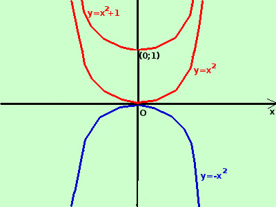

|
sviluppo y = x2  Curva in rosso E' la funzione parabola con vertice nell'origine degli assi: Passa per l'origine degli assi perche' non ha il termine noto Se ho: y = x2 + 1 la curva viene spostata di 1 verso l'alto di 1 y = -x2 se il termine al quadrato e' negativo (curva in blu) la concavita' e' rivolta verso il basso Se la funzione e' del tipo y = ax2 + bx + c con a, b e c costanti allora e' una parabola con asse parallelo all'asse delle y, passante per il punto (0;c) con vertice nel piano nel punto
|